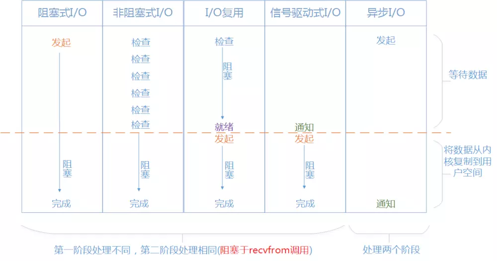
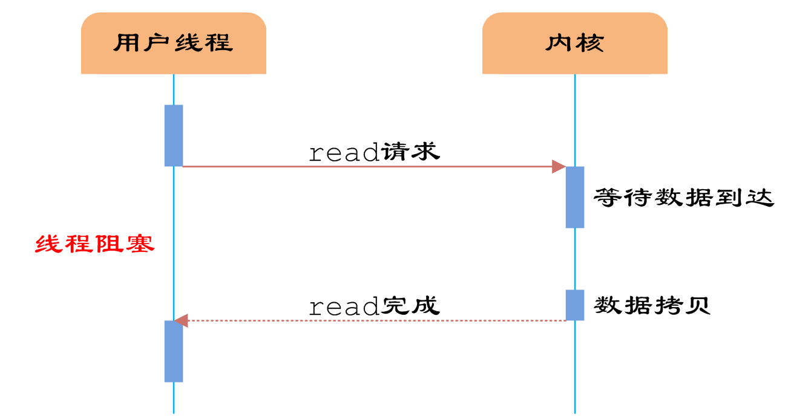
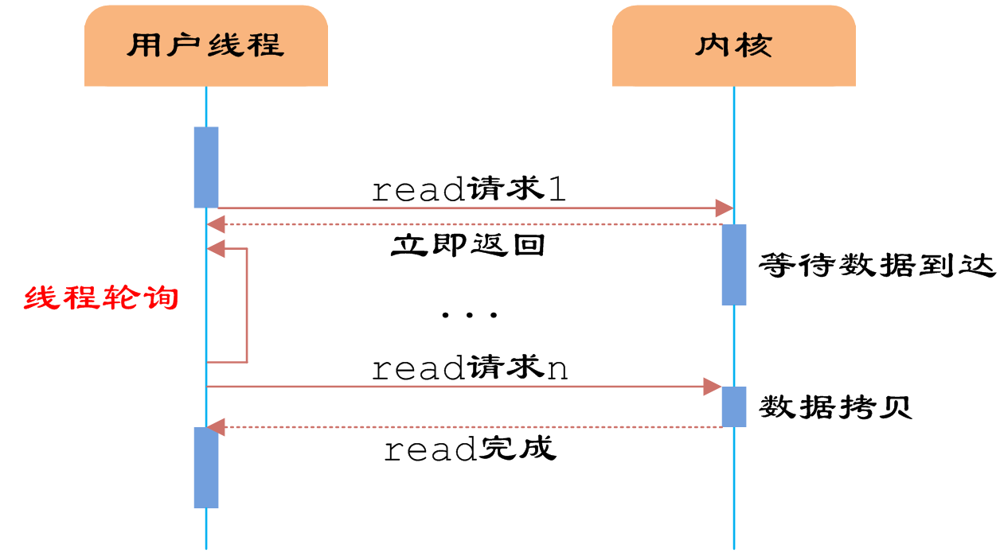
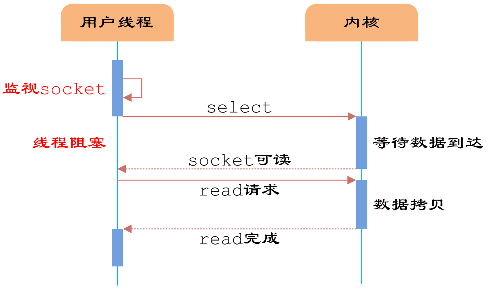
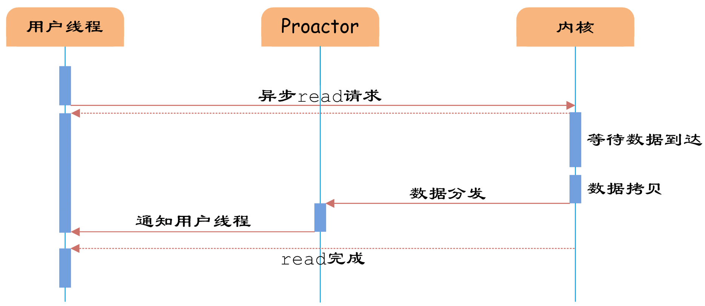
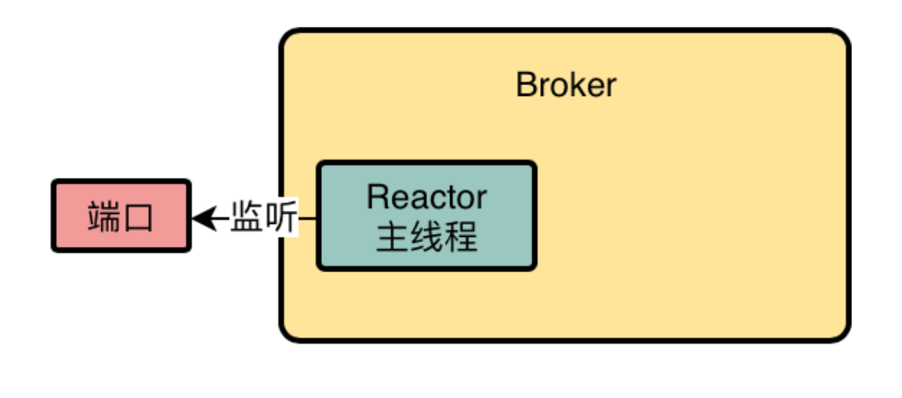
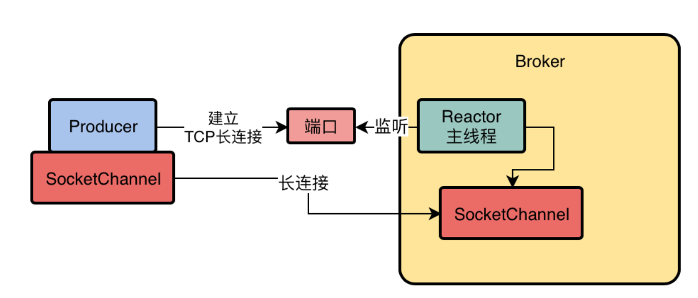
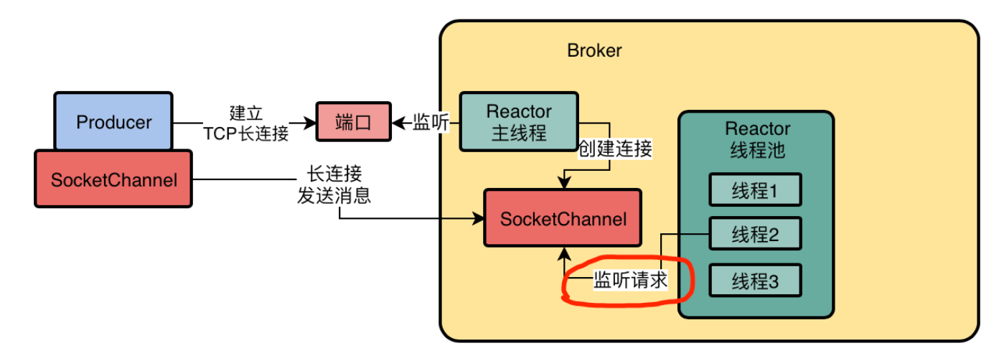
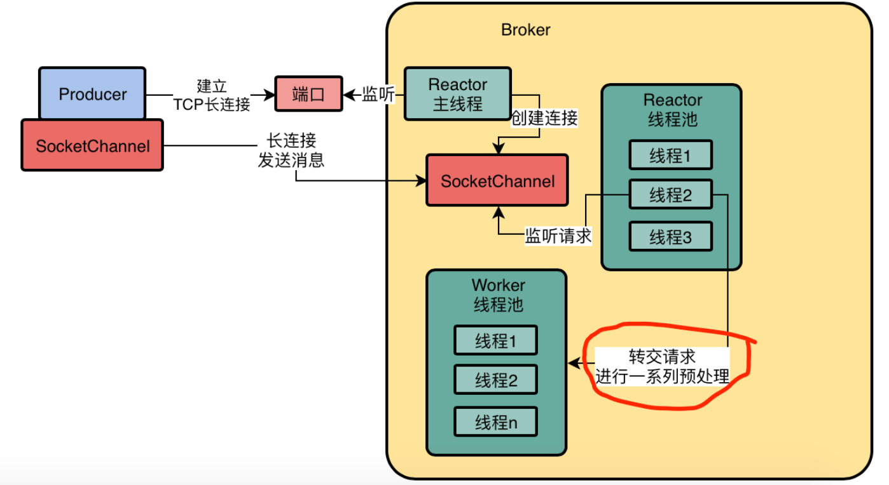
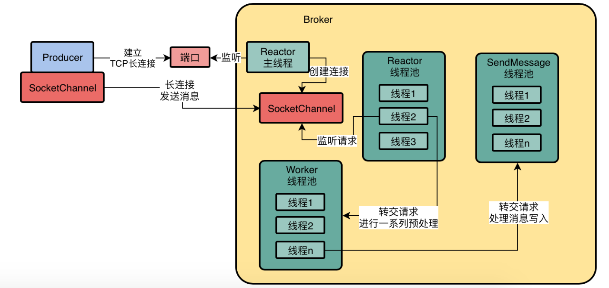

分布式消息中间件（九）——RocketMQ通信原理
本章，我们来讲解下RocketMQ中的底层通信原理，RabbitMQ基于Netty扩展出一套高性能网络通信框架。我们先来看下Broker的网络通信架构是怎样的。
一、Linux IO模型
Netty底层采用了IO多路复用技术（ IO multiplexing），而 IO multiplexing又是Linux的五种IO模型之一，所以在聊Broker的网络通信架构前，我们需要了解下什么是Linux 的IO模型。
简单来说，Linux系统一共有五种I/O模型：
- 阻塞 IO（blocking IO）：即传统的IO模型；
- 非阻塞 IO（Nonblocking IO）：注意这里所说的NIO并非Java的NIO库；
- IO 多路复用（ IO multiplexing）：Java中的Selector和Linux中的epoll/select/poll都是这种模型。
- 信号驱动 IO（ signal driven IO）：实际中并不常用，这里不讨论；
- 异步 IO（asynchronous IO）：经典的Proactor设计模式，也称为异步非阻塞IO。
我们先来看下阻塞/非阻塞，同步/异步这两个概念。
1.1 阻塞/非阻塞
阻塞和非阻塞的概念，指的是用户进程与Linux内核的交互方式，用户进程会去内核缓存区读取数据（或写入数据到内核缓存）。
阻塞：指用户进程发起IO请求后，需要等待或者轮询内核IO操作完成后才能继续执行；
非阻塞：是指用户进程发起IO请求后仍继续执行，当内核IO操作完成后会通知用户进程（者调用用户进程注册的回调函数）。
在Linux系统中，每个进程有自己独立的缓冲区——进程缓冲区，而系统内核也有个缓冲区——内核缓冲区。针对一个文件的读写，通常会进行如下动作：
- 以write命令为例，数据会先被拷贝进程缓冲区，再拷贝到操作系统的内核缓冲区中，最后才会写到硬盘中；
- 以read命令为例，则是反方向，数据会先被拷贝到操作系统的内核缓冲区中，然后从内核缓冲区的拷贝到进程缓冲区，最后交给进程。

1.2 同步/异步
同步和异步的概念，指的是Linux内核真正进行I/O操作的方式，内核会读取硬盘数据到内核缓存区（或从内核缓存区写出数据到硬盘）。
同步：指内核进行I/O操作时，需要彻底完成后才返回到用户空间。
非同步：指内核进行I/O操作时，被调用后立即返回给用户一个状态值，无需等到I/O操作彻底完成。
从上面分析可以看出，所谓的同步和异步、阻塞和非阻塞，其实恰好对应了Linux系统进行I/O操作的两个阶段：
第一阶段：数据准备阶段，即内核从磁盘读取数据至内核缓存区（或从内核缓存区写出数据到硬盘）。
第二阶段：内核空间和用段，户进程缓冲区交互阶即内核空间的数据复制回进程缓存区（或从进程缓存区复制数据到内核缓存区）。

1.3 阻塞IO（Blocking IO）
阻塞IO模型是最简单的IO模型，下图以read命令为例：

①用户进程通过read 命令发起I/O读操作；
②用户空间切换到内核空间（此时调用进程阻塞等待，称之为阻塞）；
③内核等待数据准备，即从硬盘->内核缓存区（此时称之为同步）；
④内核接收完数据后，将数据从内核缓存区拷贝到进程缓存区中；
⑤用户进程恢复，开始从进程缓存区读取数据。
特点：IO执行的两个阶段都被block了，用户进程被阻塞就不能做任何事情，对CPU的资源利用率不够。
1.4 非阻塞IO（NonBlocking IO）
非阻塞IO，用户线程可以在发起IO请求后立即返回：

①用户进程通过read 命令发起I/O读操作；
②用户空间切换到内核空间（此时调用进程立即返回，称之为非阻塞，然后不断轮询）；
③内核等待数据准备，即从硬盘->内核缓存区（此时称之为同步）；
④内核接收完数据后，将数据从内核缓存区拷贝到进程缓存区中；
⑤用户进程轮询发现已经有数据了，开始从进程缓存区读取数据。
特点：用户线程需要不断地轮询，消耗了大量的CPU的资源。一般很少直接使用这种模型，而是在其他IO模型中使用非阻塞IO这一特性。
1.5 IO多路复用（IO Multiplexing）
IO多路复用模型，是建立在内核提供的多路分离命令——select/poll/epoll基础之上的（这三个命令都实现了IO多路复用功能，不过是出现早晚和细节功能有所差异），它的最大特点就是：单个线程可以同时监听多个I/O流，当任意一个I/O流状态发生变化时就通知线程。
本质：单个线程通过记录跟踪每一个Sock(或者称为文件描述符)的状态来同时管理多个I/O流

以select命令为例：
①用户进程调用select命令（调用时传入需要监听的IO流集合），此时用户进程被阻塞；
②内核会“监视”所有select负责的所有文件描述符（I/O流）集合；
③当任一一个等待数据到达后，select会返回，用户进程恢复运行；
④这时，用户进程可以调用read操作，将数据从内核缓存区拷贝到用户进程。
特点：与多线程技术相比，I/O多路复用技术的最大优势是系统开销小，系统不必创建多个线程（每个线程单独处理一个I/O），从而大大减小了系统的开销。
1.6 异步IO（Asynchronous IO）
异步IO，IO执行的两个阶段都是异步的：

①用户进程发起read操作之后，立刻就可以开始去做其它的事；
②另一方面，操作系统开启独立的内核线程去处理真正的IO操作；
③当等待数据到达后，内核负责读取数据，并写入用户进程缓冲区；
④内核通知用户进程，告诉它可以去读数据了。
特点：异步IO并不十分常用，不少高性能并发服务程序使用IO多路复用模型+多线程任务处理的架构基本可以满足需求。目前操作系统对异步IO的支持并非特别完善，更多的是采用IO多路复用模型+模拟异步IO的方式（IO事件触发时不直接通知用户线程，而是将数据读写完毕后放到用户指定的缓冲区中）。
二、RocketMQ的Reactor模式
作为Broker而言，它会有一个Reactor主线程。如果对Netty有所了解，看到Reator这个单词应该就能猜到，RocketMQ也用了Reactor模式，只不过稍加改变。
2.1 建立连接
在Broker中，Reactor主线程负责监听特定的端口，比如2888、29150这样的端口：

假设我们有一个Producer想要跟Broker建立一个TCP长连接，此时Broker上的这个Reactor主线程，它会在端口上监听到Producer建立连接的请求，接着这个Reactor主线程就专门会负责跟这个Producer按照TCP协议规定的一系列步骤和规范，建立好一个长连接：

上图中，SocketChannel就代表着他俩建立好的这个长连接/。
2.2 Reactor线程池
建立完长连接后，还不能让Producer直接发送消息给Broker，Reactor主线程会将这些建立好的长连接交给Reactor线程池，由Reactor线程池中的线程负责监听是否有消息到达：

当Producer发送消息时，Reactor线程池中的线程监听到请求后，就会从SocketChannel中读取到请求，但是Reactor线程池自己不会对请求做处理，而是交给Worker线程池。
2.3 Worker线程池
Worker线程池接收到Reactor线程池传过来的请求后，会对请求进行一些准备工作和预处理：比如SSL加密验证、编码解码、连接空闲检查、网络连接管理等等。

Worker线程池中默认有8个线程。
2.4 业务线程池
Worker线程对请求完成了一系列的预处理之后，就需要对这个请求进行正式的业务处理了，它会将请求转交给业务线程池。
业务线程池根据业务的不同有很多种，比如对于生产者发送的消息，请求会转交给SendMessage线程池：

三、总结
Broker的网络通信架构，总结起来就是如下几点：
- Reactor主线程在端口上监听Producer建立连接的请求，建立长连接；
- Reactor线程池并发的监听多个连接的请求是否到达，到达则转发请求；
- Worker请求并发的对多个请求进行预处理；
- 业务线程池并发的对多个请求进行磁盘读写等业务操作。
通过“专人专事”的模式， 这样一套网络通信架构，最终实现的效果就是可以高并发、高吞吐的对大量网络连接发送过来的大量请求进行处理，这是保证Broker实现高吞吐的一个非常关键的环节。